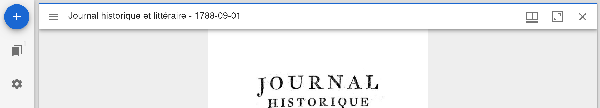
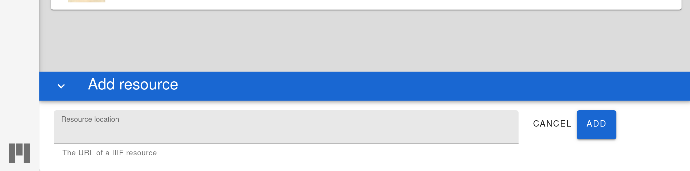

Riksarkivet: Fulltextsök med IIIF och ALTO-XML
Instruktion
Kopiera följande manifest URI:
https://byabbe.se/riksarkivet-text/enriched_manifest.json
Gå till en Mirador-instans med plugin-verktyget mirador-textoverlay så som följande instans: Mirador-textoverlay demo.
Klicka på knappen för att lägga till en resurs i det övrevänstra hörnet:
Klicka nu på "Add resource" i det nedrehögra hörnet och klistra sedan in manifest URIn från ovan och klicka på "add" till höger.
Nu bör du kunna se dokumentet "Göteborgs poliskammare före 1900, Detektiva polisens rapportböcker, SE/GLA/12703/A II/12 (1880)."
Om allt gått bra med HTR/ALTO-XML kopplingen bör du nu kunna:
- Söka i texten genom att klicka Ctrl+f
- Välja HTR versionen av texten med musen
- Välja att alltid visa HTR-texten på dokumentet
- Ändra bakgrundsfärg och textfärg för HTR-texten
Notera att i exemplet ovan skalas vissa ord konstigt.
Hur det fungerar
Först och främst har Riksarkivets ALTO-XML publicerats med URIer:
https://byabbe.se/riksarkivet-text/alto/30003111_00001.xml
Därefter har alla Canvas instanser i Riksarkivets IIIF menifest berikasts med en rdfs:seeAlso relation till respektive ALTO-dokument.
Ovanstående är allt som behövs för att plugin-verktyget mirador-textoverlay ska kunna hitta, läsa och rendera HTR/OCR text.